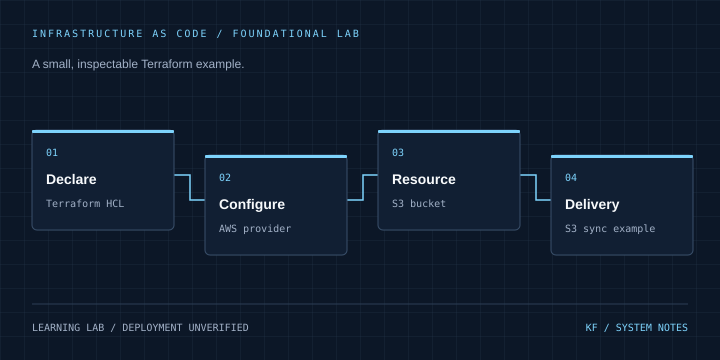

08 / CLOUD & DEVOPS / CASE STUDY
Terraform foundations
Making a small piece of cloud infrastructure explicit and repeatable.
Learning lab Inspect source on GitHub ↗
Architecture
Terraform HCL → AWS provider → S3 resource → S3 sync example
Problem & context
Manual cloud setup is difficult to inspect and reproduce from a source repository.
Objectives
Practice the AWS provider and resource declaration in Terraform alongside a simple S3 delivery workflow.
My role & project work
Repository work includes an AWS provider, an S3 bucket resource and a GitHub Actions S3 sync example.
Technical implementation
terraform/main.tf contains the AWS provider in us-east-1 and one S3 bucket resource. The separate workflow configures AWS credentials and runs aws s3 sync against a placeholder bucket.
Engineering decisions
A small resource definition keeps the learning scope inspectable. The workflow is an example rather than a verified configured deployment because its destination is still a placeholder.
Challenges & solutions
README scope exceeds the checked-in infrastructure. Describe the actual S3 lab and make the configuration gap visible before anyone tries to reuse the workflow.
Testing & verification
Reviewed terraform/main.tf, .github/workflows/deploy.yml, README.md and the tree. No Terraform apply, AWS calls or pipeline execution occurred.
Current status
Foundational learning lab. No EKS provisioning, environment promotion or branch protection implementation is claimed.
Lessons & next steps
Infrastructure code is useful evidence only at the scope it actually implements. Next work includes provider pinning, state management and validation before deployment.